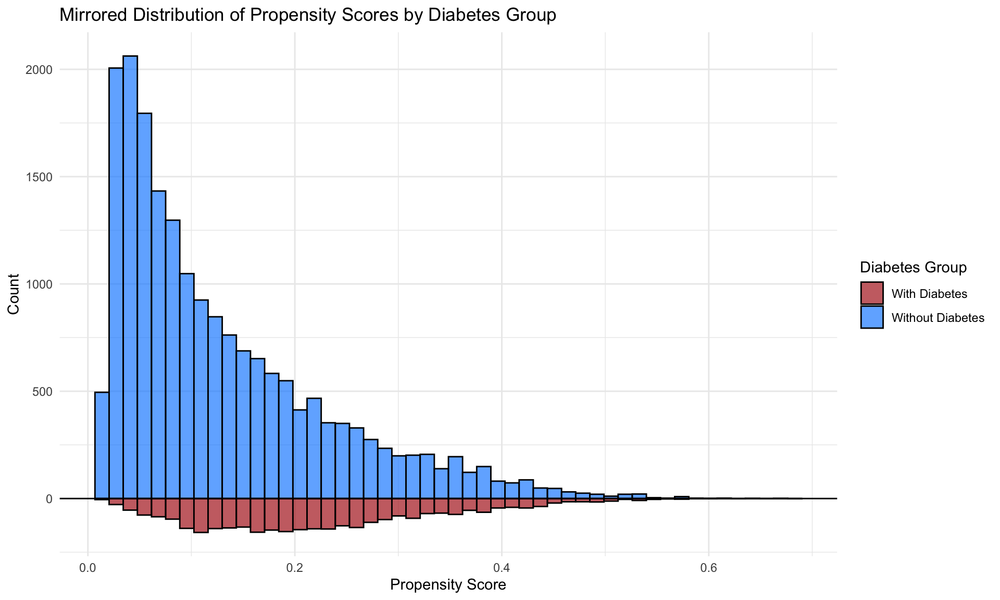

Propensity Score
1 Introduction
1.1 Causal Framework (ATE and ATT)
In causal inference, particularly when evaluating treatment effects, we often rely on potential outcomes to understand how a treatment or intervention affects individuals. The two key concepts often used are:
- Average Treatment Effect (ATE): The average difference in outcomes if everyone in the population were treated versus if everyone were untreated.
- Average Treatment Effect on the Treated (ATT): The average difference in outcomes, but only among those who actually received the treatment.
For each individual i in the study:
\(Y_i(1)\) = The potential outcome if individual i receives the treatment (exposure).
\(Y_i(0)\) = The potential outcome if individual i does not receive the treatment (control).
\(Z_i\) = Treatment assignment:
- \(Z_i = 1\) if individual i is assigned to the treatment group.
- \(Z_i = 0\) if assigned to the control group.
\(Y_i\) = The observed outcome for individual i, depending on their treatment assignment.
Since each individual either receives treatment or not, we can only observe one of the two potential outcomes for any given person—not both. This is known as the Fundamental Problem of Causal Inference.
The observed outcome can be written as:
\[ Y_i = Z_i \times Y_i(1) + (1 - Z_i) \times Y_i(0) \]
This means:
If \(Z_i = 1\) (treated), then:
\[ Y_i = Y_i(1) \]
If \(Z_i = 0\) (control), then:
\[ Y_i = Y_i(0) \]
In other words, for each individual, we only observe the outcome corresponding to their actual treatment status.
1.1.1 Defining the Average Treatment Effect (ATE)
The Average Treatment Effect (ATE) measures the expected difference in outcomes between treatment and control across the entire population:
\[ ATE = E[Y_i(1) - Y_i(0)] \]
Interpretation:
- Imagine a hypothetical world where everyone in the population is treated, and compare that to a world where everyone is untreated.
- The ATE is the average difference in outcomes between those two hypothetical worlds.
In practice, we never observe both potential outcomes for an individual, but with appropriate study design (e.g., randomization) or statistical adjustment (e.g., propensity scores), we can estimate the ATE.
1.1.2 Defining the Average Treatment Effect on the Treated (ATT)
The Average Treatment Effect on the Treated (ATT) focuses only on those individuals who actually received the treatment:
\[ ATT = E[Y_i(1) - Y_i(0) | Z_i = 1] \]
Interpretation:
- Among those who received the treatment, how much did the treatment, on average, improve or change their outcome compared to if they had not received it?
- This is especially relevant when evaluating real-world effectiveness, as it reflects the benefit to those who actually get the intervention.
1.1.3 Relationship Between ATE and ATT
- In ideal Randomized Controlled Trials (RCTs), where randomization is perfect and adherence is complete, ATE and ATT are often the same.
- In observational studies, where treatment
assignment is not random and may depend on characteristics of
individuals, ATE and ATT can differ.
- In observational settings, treated individuals may differ systematically from untreated ones (e.g., sicker patients are more likely to be treated).
- Methods like propensity score matching, inverse probability weighting, or regression adjustment are used to adjust for these differences and estimate ATE or ATT.
In causal inference, we can only observe one potential outcome for each individual, depending on treatment assignment.
- The ATE answers: “What is the average effect of the treatment if applied to everyone?”
- The ATT answers: “What is the average effect of the treatment among those who actually received it?”
- In RCTs, ATE and ATT often align; in observational studies, they may differ and require statistical adjustment.
- Methods like propensity score matching or inverse probability weighting help approximate these effects under certain assumptions.
Here focuses on ATE and ATT, other estimands exist:
| Treatment Effect Type | Description |
|---|---|
| ATC | Average Treatment Effect for the Control group. |
| SATE | Sample Average Treatment Effect — treatment effect in the sample. |
| PATE | Population Average Treatment Effect — treatment effect in the entire population (including those not sampled). |
| LATE | Local Average Treatment Effect — effect for a subgroup defined by specific conditions (e.g., compliers in an instrumental variable analysis). |
| CATE | Conditional Average Treatment Effect — treatment effect conditional on certain covariates or subgroups. |
1.2 Propensity score matching
Propensity score matching is a statistical technique used to balance observed covariates between treatment and control groups in an observational study. The core idea is to estimate the propensity score, which is the probability that an individual receives the treatment or exposure based on their observed characteristics. This score is typically estimated using regression models, such as logistic regression or probit models, where the dependent variable is treatment assignment and the predictors are baseline covariates.
In randomized controlled trials (RCTs), treatment assignment is random, meaning individuals are assigned to either the treatment or control groups by chance. If randomization is properly implemented, both observed and unobserved characteristics should be equally distributed across groups, reducing the risk of confounding. After randomization, researchers often check whether the groups are balanced with respect to important covariates, but if the randomization process is sound, balance is generally achieved naturally.
In contrast, observational studies lack random assignment. As a result, there is often imbalance between treatment groups, meaning individuals in different groups may differ systematically in ways that affect the outcome. This imbalance introduces potential bias and confounding, making it harder to draw valid causal conclusions.
To address this issue in observational studies, researchers can use multiple regression models or propensity score methods. Multiple regression models adjust for confounding by including observable covariates directly in the model that estimates the outcome. Propensity score methods take a different approach by estimating the probability of treatment based on observed covariates, then using this probability to adjust for differences between groups.
If implemented correctly, propensity score matching can mimic the balance achieved in a randomized trial, at least with respect to observed characteristics. It is important to note that propensity score methods do not account for unobserved confounders unless certain assumptions hold, but under these assumptions, the groups can be balanced in a way similar to an RCT.
1.3 Key Assumptions
- Conditional Independence Assumption (CIA): Treatment assignment must be conditionally independent of potential outcomes, given the covariates (no unmeasured confounders).
- Overlap: Every subject must have a nonzero probability of receiving each treatment option, ensuring that each treatment group is representative of the whole population.
When both assumptions are satisfied, the propensity score can be effectively used as a balancing score, where treated and untreated subjects with similar propensity scores will have similar distributions of observed covariates. This allows researchers to approximate the conditions of a randomized controlled trial, thereby enabling them to estimate causal treatment effects from observational data.
- Modeling: Typically, propensity scores are estimated using logistic regression, where the treatment assignment is regressed on observed covariates. Other methods such as machine learning techniques can also be employed to enhance the estimation accuracy, especially in complex datasets.
- Adjustment Methods: Once estimated, propensity scores can be used to adjust for the treatment effect in several ways, including matching, stratification, inverse probability treatment weighting (IPTW), and covariate adjustment, each with its strengths and limitations depending on the specific study context.
1.3.1 1. Conditional Independence Assumption (CIA)
- Concept: This assumption, also known as unconfoundedness, posits that treatment assignment is independent of potential outcomes, given the observed baseline covariates.
- Details: The assumption means that once we control for the observed baseline characteristics (X), the treatment assignment (D) is independent of the potential outcomes (Y(0) for control and Y(1) for treatment). This is key because it implies that any differences in outcomes between the treated and untreated groups can be attributed solely to the treatment and not to pre-existing differences.
- Importance: It’s referred to as the “no unmeasured confounders” assumption because it relies on the idea that all variables that influence both the treatment assignment and the outcomes have been measured and included in X. If there are unmeasured confounders, the treatment effect estimation may be biased.
1.3.2 2. Overlap (or Positivity) Assumption
- Concept: This assumption states that every subject in the study has a nonzero probability of receiving each treatment option, conditioned on the covariates.
- Details: Mathematically, this is expressed as \(0 < P(D = 1 | X) < 1\), where \(P(D = 1 | X)\) is the probability of receiving the treatment given covariates X.
- Importance: The overlap assumption ensures that for each set of covariates X, there are both treated and untreated subjects. This is crucial for comparison and helps avoid situations where treatment effects cannot be estimated because certain types of subjects only receive one kind of treatment.
- Application: In practice, ensuring overlap involves checking that the propensity scores for the treated and untreated groups span a common range, thereby confirming that for every individual in the study, there is a comparable individual with a similar likelihood of treatment across the spectrum.
1.4 Four Methods
1.4.1 1.Propensity Score Matching
Propensity score matching (PSM) is a statistical technique used to create comparable groups in observational studies where random assignment is not possible. This method helps to reduce bias in estimates of treatment effects by balancing observed covariates between treated and untreated groups. Here’s a closer look at how PSM works and the steps involved:
PSM aims to mimic the conditions of a randomized controlled trial by matching units (e.g., patients, schools, etc.) that have received a treatment with similar units that have not, based on their propensity scores. A propensity score is the probability of a unit being assigned to a particular treatment, given a set of observed covariates.
Alternative Methods Using Propensity Scores
Besides matching, propensity scores can be utilized through: - Stratification: Dividing the sample into quintiles or deciles based on propensity scores and comparing outcomes within these strata. - Regression Adjustment: Including the propensity score as a covariate in a regression model. - Weighting: Applying weights based on the inverse probability of treatment to create a synthetic sample in which the distribution of measured baseline covariates is independent of treatment assignment.
Variance Estimation in Propensity Score Matched Samples
- Independence Assumption (Schafer and Kang, 2008):
- Schafer and Kang suggest treating the treated and untreated subjects within a matched sample as independent. This perspective simplifies the variance estimation but might overlook the intrinsic pairing and similarities between matched units.
- Paired Variance Calculation (Imbens, 2004):
- Imbens advocates for calculating the variance as one would in a paired experimental design, acknowledging that each treated unit is explicitly paired with a control unit based on similar propensity scores. This method reflects the dependent nature of the matched pairs.
- Lack of Independence (Austin):
- Austin emphasizes that the matched samples are not independent observations. Since treated and untreated subjects within a matched set are similar in their propensity scores and therefore their baseline covariates, they are likely to have correlated outcomes. This correlation must be considered when estimating the variance of the treatment effect to avoid underestimating the standard errors.
Types of Matching Designs
- Bipartite Matching: This is the most common form and involves one-to-one matching without replacement. Once a control unit is matched with a treatment unit, it cannot be used again. This method helps to ensure that each match is unique and limits the reuse of control units.
- Non-Bipartite Matching: In this design, matching allows for replacement. It means a control unit can be matched to multiple treatment units. This approach can be beneficial in scenarios where there are insufficient control units that have close propensity scores to the treatment units.
Steps in Propensity Score Matching
- Data Collection and Preparation: Gather all necessary data and prepare it for analysis, ensuring that it includes all relevant covariates that might influence both the treatment assignment and the outcome.
- Estimating Propensity Scores: Use statistical methods like logistic regression, discriminant analysis, or machine learning techniques like random forests to estimate the propensity scores.
- Matching Participants: Match treatment and control units based on their propensity scores. This can be done using various algorithms like nearest neighbor matching, caliper matching, or optimal matching.
- Evaluating Match Quality: After matching, it’s crucial to check the balance of covariates across the treatment and control groups. A well-performed match should show no significant differences in the distribution of covariates across groups, indicating that the matching process has effectively mimicked randomization.


Matching Algorithms
Matching algorithms play a pivotal role in propensity score matching (PSM) by determining how participants in treatment and control groups are paired based on their estimated propensity scores. Here’s a detailed breakdown of the key matching methods and algorithms, as well as the critical decisions involved in the process:
- One-to-One Matching: Each participant in the treatment group is paired with one participant from the control group.
- Variable Matching: The algorithm determines the optimal number of control participants to match with each treatment participant, ensuring the best possible match based on the data.
- Fixed Matching: A predetermined number of controls (k) are matched to each treatment participant, adhering to a fixed ratio.
Matching Algorithms
Greedy Matching: Quickly selects matches based on immediate proximity in propensity scores, without considering future matches. This includes:
- Caliper Matching: Imposes a maximum allowable difference between the propensity scores of matched units.
- Nearest Neighbor Matching: Pairs each treatment unit with the closest untreated unit based on the propensity score.
Genetic Matching: Refines matches iteratively by considering both propensity scores and Mahalanobis distance, enhancing the overall match quality.
Optimal Matching: Aims to minimize the total within-pair difference in propensity scores across all pairs, striving for the most statistically balanced matches.
Matching without Replacement vs. Matching with Replacement
- Without Replacement: Ensures unique pairings by using each untreated subject only once, which may reduce bias but can limit matching options in unbalanced datasets.
- With Replacement: Allows reuse of untreated subjects in multiple matches, increasing flexibility but complicating variance estimation as the independence of observations is compromised.
Greedy vs. Optimal Matching
- Greedy Matching: Prioritizes immediate match quality, potentially sacrificing optimal long-term pairings.
- Optimal Matching: Considers all possible matches to minimize overall disparity in propensity scores, often at a greater computational cost.
Common Propensity Score Matching Algorithms
- Nearest Neighbor Matching:
- Description: Matches each treated unit to one or more control units based on the closest propensity score.
- Trade-offs: Can reduce bias but may increase variance if only a few controls are used repeatedly for multiple treated units.
- Caliper Matching:
- Description: Similar to nearest neighbor but restricts matches to those within a predefined propensity score range (the caliper).
- Trade-offs: Helps avoid poor matches that could increase bias, but might exclude potential matches, increasing variance due to a smaller sample.
- Stratification or Interval Matching:
- Description: Divides the range of propensity scores into intervals and matches treated and control units within these strata.
- Trade-offs: Reduces variance by using more of the available data for matching but might increase bias if intervals are not narrow enough to ensure comparable groups.
- Kernel and Local Linear Matching:
- Description: Weights control units based on the distance of their propensity scores from the treated unit, often using a kernel function to smooth differences.
- Trade-offs: Typically reduces bias by using a weighted average of multiple controls but can increase variance if the smoothing parameter is not optimally chosen.
Factors Influencing the Choice of Matching Method
- Dataset Size and Balance: Larger or more balanced datasets might favor non-replacement methods, providing sufficient matches without needing to reuse controls.
- Computational Resources: The availability of computational power can dictate whether optimal or greedy matching is feasible.
- Research Goals: The specific objectives and the required precision of the study influence the matching strategy, balancing the need for accurate treatment effect estimation against practical constraints.
Understanding the Trade-off Between Bias and Variance
When implementing propensity score matching (PSM) in observational studies, selecting the right matching algorithm is crucial, especially when sample sizes are small. The choice of algorithm affects the trade-off between bias and variance, and ultimately, the validity and reliability of the estimated treatment effects.
- Bias: Occurs when there is systematic error in estimating the treatment effect. Bias can arise from inadequate matching, where the control units do not adequately represent the counterfactual for the treated units.
- Variance: Refers to the variability of the estimated treatment effects across different samples. A higher variance means less precision and potentially wider confidence intervals.
In propensity score matching, achieving a balance between minimizing bias and variance is essential. A match that is too strict (e.g., requiring exact matches on many covariates) may reduce bias but increase variance because fewer matches are available, leading to less precise estimates. Conversely, more lenient matching criteria can increase the sample size of matched pairs but may introduce bias if the matches are not sufficiently similar.
Assessing the Matching Quality
Assessing the quality of matching in propensity score analysis is a crucial step to ensure the validity of causal inference. Below are detailed methodologies and considerations to check the quality of matching, focusing on overlap and common support, and subsequent steps to validate matching effectiveness:
1. Overlap and Common Support
Visual Analysis
- Density Plots: The simplest and most straightforward method is to plot the density distribution of the propensity scores for both treatment and control groups. Overlapping distributions suggest good common support.
- Range Comparison: Compare the minimum and maximum propensity scores in both groups. Lack of overlap indicates that there are regions where comparisons might not be valid, leading to biased estimates.
Sensitivity to Extreme Values
- Tenth Smallest/Largest Observations: As suggested by Lechner (2002), consider replacing the absolute minima and maxima with the tenth smallest and largest observations to mitigate the impact of extreme values. This method checks for robustness against outliers in the propensity score distribution.
2. Assessing Matching Quality
Standardized Bias (SB)
- Calculation: The standardized bias for each covariate is calculated as the difference in means between the treatment and control groups, divided by the standard deviation of the covariate in the full sample.
- Acceptable Levels: An SB below 3% to 5% after matching is typically considered indicative of good balance.
Two-Sample t-Test
- Purpose: Used to test if there are statistically significant differences in the means of the covariates between the treatment and control groups after matching. The expectation is that no significant differences should exist if the matching is successful.
Joint Significance and Pseudo-R^2
- Re-Estimation of Propensity Score: After matching, re-estimate the propensity score on the matched samples to check for residual differences.
- Pseudo-R^2: Measures how well the covariates explain the treatment assignment in the matched sample. A low pseudo-R^2 after matching suggests that the matching process has successfully balanced the covariates.
- Likelihood Ratio Test: Perform this test to check for the joint significance of all regressors in the model before and after matching. The hypothesis should ideally be rejected after matching, indicating no systematic differences between groups.
Stratification Test
- Strata Based on Propensity Scores: Divide observations into strata based on their propensity scores. Within each stratum, use t-tests to check for balance in covariates.
- Adjustment: If imbalances persist, consider adding higher-order terms and interactions to the propensity score model and re-assess balance.
3. Estimating the Variance of Treatment Effects
Complexity in Variance Estimation
- Sources of Variance: The variance of the estimated treatment effects should account for the variability introduced by estimating the propensity score, the determination of common support, and the matching procedure (especially if matching without replacement).
- Statistical Significance: Standard errors must be adjusted to reflect these sources of variability to ensure accurate inference about the treatment effects.
Criticisms and Challenges
- Estimation Uncertainty: Since the true propensity score is never known, there is always a degree of uncertainty regarding the accuracy of the score estimates. This can limit the reliability of the matching process.
- Methodological Critiques: Some researchers, like King (2016), argue against using propensity scores for matching due to inherent limitations and biases in observational data.
- Iterative Balancing: Rosenbaum and Rubin (1983) suggest iterative checking of propensity scores for balance. However, this can be challenging in practice due to data limitations and computational complexity.
- Alternative Methods: Genetic matching proposed by Diamond and Sekhon offers an alternative that reduces the need for iterative balance checks by dynamically adjusting both the scores and the matching criteria.
1.4.2 2.Stratification on the Propensity Score
Stratification on the propensity score is a method of controlling for confounding in observational studies by dividing subjects into strata based on their estimated propensity scores. This technique aims to make the treatment and control groups within each stratum more comparable, thereby reducing bias and approximating the conditions of a randomized controlled trial.
Overview
Stratification Process: Subjects are ranked and divided into mutually exclusive subsets based on the quintiles of their estimated propensity scores. This division often results in five equal-size groups, each representing a different segment of the propensity score distribution.
Bias Reduction: According to research by Cochran (1968) and later by Rosenbaum and Rubin (1984), stratifying on the quintiles of a continuous confounder can eliminate approximately 90% of the bias. This effectiveness is maintained when applying stratification to the propensity score, significantly reducing the bias due to measured confounders.
Increasing Strata for Bias Reduction: While increasing the number of strata can further reduce bias, the marginal benefit decreases with more strata. This diminishing return needs to be balanced against the complexity and sample size requirements of additional strata.
Estimation of Treatment Effects within Strata
Quasi-Randomized Controlled Trials (quasi-RCTs): Each stratum can be seen as an independent quasi-RCT where the treatment effect is estimated by directly comparing outcomes between treated and untreated subjects within that stratum.
Pooling of Stratum-Specific Estimates: The treatment effects estimated within each stratum can be pooled to derive an overall estimate of the treatment effect. This is done using weighted averages, where weights are typically equal to 1/K for K strata, or proportional to the number of treated subjects in each stratum to focus on the average treatment effect on the treated (ATT).
Variance Estimation: Pooling the variances of the stratum-specific treatment effects provides a comprehensive estimate of the variance for the overall treatment effect. This aspect of variance estimation is crucial for assessing the precision and statistical significance of the estimated effects.
Within-Stratum Regression Adjustment: To further refine the estimates and account for any residual differences between treated and untreated subjects within each stratum, regression adjustment can be applied. This step adjusts for covariates that may still be imbalanced within strata.
Stratum-Specific Effects: Each stratum-specific effect provides insight into how treatment effects might vary across different levels of propensity score, offering a more nuanced understanding of the treatment’s impact across different subgroups.
1.4.3 3.Propensity Score Weighting
Propensity score weighting is a statistical technique commonly used in observational studies to control for confounding variables. This technique allows researchers to estimate the effect of a treatment by creating a more balanced comparison between treated and untreated groups.
Overview
- Propensity Score: This is the probability of receiving the treatment given a set of observed covariates. The score is typically estimated using logistic regression, where the treatment assignment (treated vs. untreated) is the dependent variable and the covariates are the independent variables.
- Propensity Score Weighting: Once propensity scores
are calculated, each subject is assigned a weight. The main types of
weights include:
- Inverse Probability of Treatment Weighting (IPTW): Patients in the treatment group are weighted by the inverse of their propensity score, while those in the control group are weighted by the inverse of one minus their propensity score. This method helps to create a synthetic sample in which the distribution of covariates is independent of treatment assignment.
- Stabilized Weights: These are similar to IPTW but are normalized using the marginal probability of receiving the treatment, reducing the variance of the weights and improving the stability of estimates.
Advantages
- Inclusion of All Patients: Unlike matching, where subjects without a counterpart in the opposite group are excluded, weighting includes all patients. This is particularly crucial in studies with small sample sizes, where losing even a small number of subjects can significantly impact the power and generalizability of the findings.
- Reduction of Bias: By adjusting for confounders through weighting, this approach helps to reduce selection bias and makes the groups more comparable on observed characteristics.
- Efficiency and Simplicity: Weighting can be more straightforward to implement than more complex multivariable techniques and does not require the discarding of unmatched cases.
- Handling of Uncommon Events: In situations where the treatment or outcome is rare, matching might not be feasible due to the difficulty of finding matches. Weighting can handle these scenarios more effectively.
Limitations
- Reliance on Observed Covariates: Propensity score methods can only adjust for observed and correctly measured covariates. Any hidden bias due to unmeasured confounders cannot be accounted for.
- Overemphasis on Certain Cases: Extremely high or low weights can disproportionately influence the analysis, sometimes leading to large variances in estimates.
Propensity Score Weighting Methods
In Real-World Evidence (RWE) studies, different propensity score weighting methods are tailored to specific analytical goals and study designs. Here, to outline three common methods and their specific applications and advantages in the context of estimating treatment effects:
1. Inverse Probability of Treatment Weighting (IPTW)
IPTW is designed to estimate the Average Treatment Effect (ATE) across the entire population under study, assuming that every individual could potentially receive the treatment. This method assigns weights based on the inverse probability of receiving the treatment as predicted by the propensity score. Specifically: - Treated patients receive weights of \(\frac{1}{\text{propensity score}}\). - Control patients receive weights of \(\frac{1}{1 - \text{propensity score}}\).
Advantages:
- Ensures a balanced representation by adjusting for the differences in baseline characteristics across the treated and control groups.
- Particularly useful when evaluating the potential impact of a treatment on a general population.
2. Standardized Mortality or Morbidity Ratio (SMR) Weighting
SMR weighting is tailored to studies where it is important to preserve the characteristics of one study arm, typically the clinical trial arm, while making comparisons with an external control arm (ECA). This approach adjusts the ECA so that it resembles the trial population more closely, rather than balancing both populations to a common standard.
Advantages: - Preservation of Trial Results: Keeps the integrity of the clinical trial arm intact while adjusting the ECA. - Useful for External Comparisons: Ideal for studies incorporating ECAs where the clinical trial data is considered the standard.
3. Overlap Weighting
Overlap weighting focuses on the subset of patients whose characteristics most strongly overlap between the treated and untreated groups. It assigns weights that are inherently bounded between zero and one, which represents a proportionate influence based on the degree of overlap in their propensity scores.
Advantages: - Reduction of Extreme Weights: Unlike IPTW, which can give rise to extreme weights if patients have very low or very high propensity scores, overlap weighting naturally bounds weights, reducing the influence of outliers. - Balances Confounders: Ensures a more perfect balance of measured confounders between treatment groups, minimizing residual confounding.
Practical Considerations: - Selection of
Method: The choice between IPTW, SMR, and overlap weighting
should depend on the specific objectives of the study and the nature of
the data. - Addressing Limitations: While these methods
can significantly reduce bias due to confounding, they still rely on the
assumption that all relevant confounders have been measured and
correctly modeled. - Software Implementation: In R,
packages like MatchIt and twang provide tools
to implement these weighting methods efficiently, allowing for robust
sensitivity analyses and diagnostics to check the balance and
performance of the weights.
1.4.4 4.Covariate Adjustment Using the Propensity Score
Covariate adjustment using the propensity score involves incorporating the propensity score as a covariate in a regression model that also includes the treatment indicator. This approach allows for the control of confounding variables that are accounted for in the propensity score, providing a more precise estimate of the treatment effect.
Steps
Propensity Score Estimation: First, calculate the propensity score for each participant. This score is typically estimated using logistic regression, where the treatment assignment is regressed on observed covariates.
Regression Model: Choose the appropriate regression model based on the nature of the outcome variable:
- Continuous Outcomes: Use a linear regression model where the outcome variable is regressed on the treatment indicator and the propensity score.
- Dichotomous Outcomes: Use a logistic regression model where the binary outcome is regressed on the treatment indicator and the propensity score.
Treatment Effect Estimation:
- Linear Model: The treatment effect is the estimated coefficient of the treatment indicator, representing the adjusted difference in means between the treatment and control groups.
- Logistic Model: The treatment effect is expressed as an adjusted odds ratio, derived from the coefficient of the treatment indicator.
Key Considerations
- Model Specification: It is crucial to correctly specify the relationship between the propensity score, the treatment indicator, and the outcome. Mis-specification can lead to biased estimates of the treatment effect.
- Assumption of Correct Modeling: This method assumes that the relationship between the propensity score and the outcome is correctly modeled. Any deviation from this assumption can compromise the validity of the findings.
- Comparative Advantage: Unlike other propensity score methods that only use matching or stratification, covariate adjustment can provide a more comprehensive adjustment for confounding because it directly adjusts the outcome analysis for the propensity score.
Advantages
- Precision: This method can lead to more precise estimates of the treatment effect by directly adjusting for differences in baseline covariates as represented by the propensity score.
- Flexibility: It accommodates different types of outcomes through the choice of regression models, making it versatile across various study designs.
Disadvantages
- Dependence on Model Accuracy: The effectiveness of this approach heavily relies on the accurate estimation of the propensity score and the correct specification of the regression model.
- Potential for Overadjustment: If the propensity score model is overly complex or includes irrelevant covariates, it might lead to overadjustment, which can obscure true treatment effects.
2 Propensity Score Matching
2.1 Nearest Neighbor Approach
The first propensity score matching technique is the nearest neighbor approach. This is where the algorithm will match an individual with another individual with the closest propensity score. We can refine how close using the caliper size. If there are ties, then the algorithm will randomly select a match. For those individuals that do not match, they are dropped from the data.
There are many ways to perform the nearest neighbor approach (e.g., Mahalanobis, Greedy, optimal). In this example, we will use the Greedy method (also known as nearest in R).
We will use a caliper size of 0.01 and perform matching without replacement. Matching can also be done with replacement where individuals in the control group will be used more than once in a match with the treatment group. This will result in an imbalanced in the number of individuals in the treatment and control group.
In our example, we will not apply the replacement option. Instead, we want to have 1:1 matching without replacement. This will give us equal number of responders who have and do not have a diagnosis of diabetes.
Lastly, we will estimate the propensity score using several observed characteristics (age, sex, race, poverty, and martial status).
##########################################################
## Propensity Score Matching - Nearest Neighbor Approach
##########################################################
match1 <- matchit(diabetes ~ age + sex + race + poverty + marital_status,
data = hc2021p,
method = "nearest",
discard = "both",
caliper = 0.01)Visual Inspection
After performing the matching, a visual inspection is conducted to assess the quality of the matching. A Love plot is generated to display the standardized differences for each covariate included in the propensity score model between responders with and without diabetes. The goal is to have these covariates fall within an acceptable threshold, which, in this example, is defined as a standardized difference of less than 0.1. Additionally, the Kolmogorov-Smirnov test is performed to evaluate whether the differences are statistically significant. The target is to obtain a p-value greater than 0.05, indicating no significant difference.
Based on the love plot, the covariates appear to be well-balanced between responders who have and do not have a diagnosis of diabetes.
## Inspect matching
summary(match1)##
## Call:
## matchit(formula = diabetes ~ age + sex + race + poverty + marital_status,
## data = hc2021p, method = "nearest", discard = "both", caliper = 0.01)
##
## Summary of Balance for All Data:
## Means Treated Means Control Std. Mean Diff.
## distance 0.2193 0.1290 0.8088
## age 63.3841 49.3954 1.0276
## sex 1.5380 1.5378 0.0004
## raceWhite 0.6982 0.7685 -0.1531
## raceBlack 0.2048 0.1389 0.1633
## raceAI/AN 0.0154 0.0077 0.0626
## raceAsian 0.0496 0.0573 -0.0352
## raceMultiple 0.0320 0.0277 0.0245
## povertyPoor 0.2296 0.1469 0.1966
## povertyNear Poor 0.0700 0.0458 0.0948
## povertyLow Income 0.1583 0.1285 0.0815
## povertyMiddle Income 0.2795 0.2797 -0.0004
## povertyHigh Income 0.2626 0.3990 -0.3100
## marital_statusMarried 0.4491 0.4652 -0.0323
## marital_statusWidowed 0.1674 0.0754 0.2463
## marital_statusDivorced 0.1947 0.1348 0.1514
## marital_statusSeparated 0.0377 0.0217 0.0840
## marital_statusNever Married 0.1511 0.3029 -0.4241
## Var. Ratio eCDF Mean eCDF Max
## distance 1.1806 0.2438 0.3785
## age 0.5344 0.2057 0.3576
## sex 1.0002 0.0001 0.0002
## raceWhite . 0.0703 0.0703
## raceBlack . 0.0659 0.0659
## raceAI/AN . 0.0077 0.0077
## raceAsian . 0.0076 0.0076
## raceMultiple . 0.0043 0.0043
## povertyPoor . 0.0827 0.0827
## povertyNear Poor . 0.0242 0.0242
## povertyLow Income . 0.0297 0.0297
## povertyMiddle Income . 0.0002 0.0002
## povertyHigh Income . 0.1364 0.1364
## marital_statusMarried . 0.0160 0.0160
## marital_statusWidowed . 0.0920 0.0920
## marital_statusDivorced . 0.0600 0.0600
## marital_statusSeparated . 0.0160 0.0160
## marital_statusNever Married . 0.1519 0.1519
##
## Summary of Balance for Matched Data:
## Means Treated Means Control Std. Mean Diff.
## distance 0.2177 0.2177 0.0001
## age 63.2943 63.7663 -0.0347
## sex 1.5390 1.5349 0.0082
## raceWhite 0.7013 0.7379 -0.0798
## raceBlack 0.2030 0.1850 0.0446
## raceAI/AN 0.0139 0.0098 0.0333
## raceAsian 0.0496 0.0433 0.0291
## raceMultiple 0.0322 0.0240 0.0466
## povertyPoor 0.2280 0.2327 -0.0113
## povertyNear Poor 0.0695 0.0565 0.0507
## povertyLow Income 0.1582 0.1547 0.0095
## povertyMiddle Income 0.2804 0.2877 -0.0162
## povertyHigh Income 0.2640 0.2684 -0.0100
## marital_statusMarried 0.4490 0.4531 -0.0083
## marital_statusWidowed 0.1670 0.1601 0.0186
## marital_statusDivorced 0.1955 0.2097 -0.0359
## marital_statusSeparated 0.0369 0.0319 0.0265
## marital_statusNever Married 0.1516 0.1452 0.0176
## Var. Ratio eCDF Mean eCDF Max Std. Pair Dist.
## distance 1.0004 0.0001 0.0019 0.0003
## age 0.9761 0.0070 0.0256 0.1621
## sex 0.9988 0.0021 0.0041 0.2121
## raceWhite . 0.0366 0.0366 0.2476
## raceBlack . 0.0180 0.0180 0.2793
## raceAI/AN . 0.0041 0.0041 0.1513
## raceAsian . 0.0063 0.0063 0.2152
## raceMultiple . 0.0082 0.0082 0.2582
## povertyPoor . 0.0047 0.0047 0.2380
## povertyNear Poor . 0.0129 0.0129 0.1868
## povertyLow Income . 0.0035 0.0035 0.2206
## povertyMiddle Income . 0.0073 0.0073 0.1625
## povertyHigh Income . 0.0044 0.0044 0.1378
## marital_statusMarried . 0.0041 0.0041 0.1835
## marital_statusWidowed . 0.0069 0.0069 0.2098
## marital_statusDivorced . 0.0142 0.0142 0.2544
## marital_statusSeparated . 0.0051 0.0051 0.1956
## marital_statusNever Married . 0.0063 0.0063 0.1675
##
## Sample Sizes:
## Control Treated
## All 19262 3184
## Matched 3167 3167
## Unmatched 15974 16
## Discarded 121 1cobalt::bal.tab(match1)## Balance Measures
## Type Diff.Adj
## distance Distance 0.0001
## age Contin. -0.0347
## sex_2 Binary 0.0041
## race_White Binary -0.0366
## race_Black Binary 0.0180
## race_AI/AN Binary 0.0041
## race_Asian Binary 0.0063
## race_Multiple Binary 0.0082
## poverty_Poor Binary -0.0047
## poverty_Near Poor Binary 0.0129
## poverty_Low Income Binary 0.0035
## poverty_Middle Income Binary -0.0073
## poverty_High Income Binary -0.0044
## marital_status_Married Binary -0.0041
## marital_status_Widowed Binary 0.0069
## marital_status_Divorced Binary -0.0142
## marital_status_Separated Binary 0.0051
## marital_status_Never Married Binary 0.0063
##
## Sample sizes
## Control Treated
## All 19262 3184
## Matched 3167 3167
## Unmatched 15974 16
## Discarded 121 1## Visual inspection using Love plot
cobalt::love.plot(match1,
stats = c("m", "ks"), ### m = mean difference; ks = Kolmogorov-Smirnov
thresholds = c(m = 0.1, ks = 0.05),
drop.distance = TRUE,
colors = c("dodgerblue4", "firebrick"),
shapes = c(16, 17),
stars = "none")Convert Propensity Score Matched Results into an Analyzable Dataset
Once the propensity score matched groups are obtained, a dataset
containing these individuals needs to be created. This dataset is
referred to as match_data.
match_data <- match.data(match1)
match_data |>
head() |>
kable(format = "html", caption = "First 6 Rows of match_data") |>
kable_styling(full_width = F, bootstrap_options = c("striped", "hover", "condensed"))| dupersid | age | sex | race | poverty | diabetes | marital_status | totexp | ertexp | year | distance | weights | subclass |
|---|---|---|---|---|---|---|---|---|---|---|---|---|
| 2320012102 | 81 | 2 | White | Low Income | 1 | Widowed | 9813 | 0 | 2021 | 0.3107312 | 1 | 1 |
| 2320024101 | 44 | 2 | White | Low Income | 0 | Married | 2106 | 0 | 2021 | 0.0856385 | 1 | 415 |
| 2320028101 | 43 | 2 | White | Middle Income | 1 | Married | 377 | 0 | 2021 | 0.0735631 | 1 | 2 |
| 2320038101 | 83 | 1 | White | High Income | 0 | Married | 7677 | 0 | 2021 | 0.2673017 | 1 | 327 |
| 2320038102 | 83 | 2 | White | High Income | 0 | Married | 3953 | 0 | 2021 | 0.2405909 | 1 | 262 |
| 2320040101 | 63 | 1 | White | High Income | 1 | Widowed | 18740 | 0 | 2021 | 0.1145834 | 1 | 3 |
3 Propensity Score Weighting
3.1 Inverse Probability Weight (IPW) Methods
The nearest neighbor approach effectively identifies the best matches for individuals, resembling the structure of a randomized controlled trial. However, a significant limitation of this approach is that many individuals who could not be matched are excluded from the dataset.
In certain situations, such exclusion is undesirable.
An alternative is the inverse probability weighting (IPW) method, which allows for the retention of as much data as possible. This method assigns weights to each individual based on their estimated propensity score. These weights are then incorporated into the analysis to produce weighted estimates of the treatment effect, ensuring that unmatched individuals still contribute to the overall analysis.
Estimating the Propensity Score Using Logistic Regression
The propensity score is estimated using a logistic regression model with observable covariates. In this model, the dependent variable is the diabetes status.
Once the logistic regression is performed, predicted probabilities of having a diabetes diagnosis are generated. These predicted probabilities represent the propensity scores.
##########################################################
## Propensity Score Estimation
##########################################################
### Construct a logistic regression model
logit1 <- glm(diabetes ~ age + sex + race + poverty + marital_status,
data = hc2021p,
family = "binomial"(link = "logit"))
summary(logit1)##
## Call:
## glm(formula = diabetes ~ age + sex + race + poverty + marital_status,
## family = binomial(link = "logit"), data = hc2021p)
##
## Coefficients:
## Estimate Std. Error z value Pr(>|z|)
## (Intercept) -3.810998 0.124969 -30.496 < 2e-16 ***
## age 0.045751 0.001448 31.604 < 2e-16 ***
## sex -0.141087 0.041395 -3.408 0.000654 ***
## raceBlack 0.474756 0.053747 8.833 < 2e-16 ***
## raceAI/AN 0.933197 0.177984 5.243 1.58e-07 ***
## raceAsian 0.288761 0.093057 3.103 0.001915 **
## raceMultiple 0.566715 0.118194 4.795 1.63e-06 ***
## povertyNear Poor -0.140514 0.090899 -1.546 0.122149
## povertyLow Income -0.287948 0.068344 -4.213 2.52e-05 ***
## povertyMiddle Income -0.407309 0.059286 -6.870 6.41e-12 ***
## povertyHigh Income -0.853575 0.061451 -13.890 < 2e-16 ***
## marital_statusWidowed -0.121386 0.065844 -1.844 0.065248 .
## marital_statusDivorced 0.016357 0.056997 0.287 0.774125
## marital_statusSeparated 0.354424 0.114800 3.087 0.002020 **
## marital_statusNever Married -0.197674 0.063481 -3.114 0.001846 **
## ---
## Signif. codes: 0 '***' 0.001 '**' 0.01 '*' 0.05 '.' 0.1 ' ' 1
##
## (Dispersion parameter for binomial family taken to be 1)
##
## Null deviance: 18330 on 22445 degrees of freedom
## Residual deviance: 16263 on 22431 degrees of freedom
## AIC: 16293
##
## Number of Fisher Scoring iterations: 5## Calculate PS Score
prs_df <- data.frame(pr_score = predict(logit1, type = "response"),
diabetes = logit1$model$diabetes)
head(prs_df)There are two common approaches to generating these predicted values:
- Using the
augment_columns()function - Using the
mutate()function
After obtaining the predicted probabilities for diabetes diagnosis, the distribution of these propensity scores can be visualized for respondents with and without diabetes, allowing for an assessment of the balance between groups.
## Method 1: Using augment_columns
prob_fitted <- augment_columns(logit1,
data = hc2021p,
type.predict = "response") %>%
rename(propensity_score = .fitted)
## Inspect propensity scores (propensity_score)
summary(prob_fitted$propensity_score)## Min. 1st Qu. Median Mean 3rd Qu. Max.
## 0.01311 0.05468 0.10972 0.14185 0.20192 0.68263## Method 2: Using mutate
prob_fitted2 <- hc2021p %>%
mutate(
propensity_score = glm(diabetes ~ age + sex + race + poverty + marital_status,
data = hc2021p,
family = "binomial"(link = "logit")) %>%
predict(type = "response")
)
## Inspect propensity scores (propensity_score)
summary(prob_fitted2$propensity_score)## Min. 1st Qu. Median Mean 3rd Qu. Max.
## 0.01311 0.05468 0.10972 0.14185 0.20192 0.68263Examining the region of common support
## Visualize the propensity score distributions between the diabetes and no-diabetes groups
ps_fitted <- prob_fitted2 %>%
tidyr::spread(diabetes, propensity_score, sep = "_")
ggplot(ps_fitted) +
geom_histogram(aes(x = diabetes_0, fill = "Without Diabetes"),
bins = 50, alpha = 0.7, color = "black") +
geom_histogram(aes(x = diabetes_1, y = -after_stat(count), fill = "With Diabetes"),
bins = 50, alpha = 0.7, color = "black") +
# Add axis and titles
ylab("Count") + xlab("Propensity Score") +
geom_hline(yintercept = 0, linewidth = 0.5) +
scale_y_continuous(labels = abs) +
# Color definitions
scale_fill_manual(values = c("Without Diabetes" = "dodgerblue",
"With Diabetes" = "firebrick")) +
theme_minimal() +
ggtitle("Mirrored Distribution of Propensity Scores by Diabetes Group") +
labs(fill = "Diabetes Group")
Visual inspection
It is useful to plot the mean of each covariate against the estimated propensity score, separately by treatment status. If matching is done well, the treatment and control groups will have (near) identical means of each covariate at each value of the propensity score.
fn_bal <- function(ps_fitted, variable) {
# Dynamically pull the variable of interest outside mutate
ps_fitted$variable_value <- ps_fitted[[variable]]
ps_fitted$diabetes <- as.factor(ps_fitted$diabetes)
# Determine y-axis support for consistent scale
support <- range(ps_fitted$variable_value, na.rm = TRUE)
# Create the plot
ggplot(ps_fitted, aes(x = propensity_score, y = variable_value, color = diabetes)) +
geom_point(alpha = 0.2, size = 1.3) +
geom_smooth(method = "loess", se = FALSE) +
xlab("Propensity Score") +
ylab(variable) +
theme_bw() +
ylim(support) +
scale_color_manual(values = c("0" = "dodgerblue", "1" = "firebrick"),
labels = c("Without Diabetes", "With Diabetes"),
name = "Diabetes Status") +
ggtitle(paste("Covariate Balance for", variable, "by Propensity Score"))
}
fn_bal(prob_fitted2, "age")3.1.1 IPW for ATE
Once the propensity scores are obtained, the inverse probability weights (IPW) for the average treatment effect (ATE) can be estimated. For each respondent, the estimated propensity score \(p_i\) is used to calculate the IPW for the ATE (\(\text{ipwATE}_i\)) based on their diabetes status (\(Z_i = 1\) for individuals with a diagnosis of diabetes and \(Z_i = 0\) for those without).
The formula for estimating the IPW for the ATE is given by:
\[ \text{ipwATE}_i = \frac{Z_i}{p_i} + \frac{1 - Z_i}{1 - p_i} \]
Once these weights are estimated, the resulting dataset containing
the IPW for the ATE is saved as ate_fitted
for subsequent analysis.
##############
#### ATE IPW
##############
ate_fitted <- prob_fitted2 %>%
mutate(
ipw_ate = (diabetes / propensity_score) + ((1 - diabetes) / (1 - propensity_score))
)
## Visualize the propensity scores between the diabetes and no-diabetes groups
ps_ate <- ate_fitted %>%
tidyr::spread(diabetes, propensity_score, sep = "_")
ggplot(ps_ate) +
geom_histogram(bins = 50, aes(diabetes_1), alpha = 0.5) +
geom_histogram(bins = 50, aes(diabetes_1, weight = ipw_ate), fill = "green", alpha = 0.5) +
geom_histogram(bins = 50, alpha = 0.5, aes(x = diabetes_0, y = -..count..)) +
geom_histogram(bins = 50, aes(x = diabetes_0, weight = ipw_ate, y = -..count..), fill = "blue", alpha = 0.5) +
# Add group labels
annotate("text", x = 0.8, y = max(table(cut(ps_ate$diabetes_1, 50))), label = "With Diabetes", color = "firebrick", size = 5, hjust = 1) +
annotate("text", x = 0.8, y = -max(table(cut(ps_ate$diabetes_0, 50))), label = "Without Diabetes", color = "dodgerblue", size = 5, hjust = 1) +
ylab("count") + xlab("p") +
geom_hline(yintercept = 0, lwd = 0.5) +
scale_y_continuous(label = abs) 3.1.2 IPW for ATT
Once the propensity scores are obtained, the inverse probability weights (IPW) for the average treatment effect on the treated (ATT) can be estimated. For each respondent, the estimated propensity score \(p_i\) is used to calculate the IPW for the ATT (\(\text{ipwATT}_i\)) based on their diabetes status (\(Z_i = 1\) for individuals with a diagnosis of diabetes and \(Z_i = 0\) for those without).
The formula for estimating the IPW for the ATT is given by:
\[ \text{ipwATT}_i = \frac{Z_i}{p_i} + \frac{p_i(1 - Z_i)}{1 - p_i} \]
Once these weights are estimated, the resulting dataset containing
the IPW for the ATT is saved as att_fitted
for subsequent analysis.
The inverse probability weighting (IPW) for the ATT focuses specifically on respondents who had a diagnosis of diabetes. The weights are generated to reflect this focus, with individuals who did not have a diabetes diagnosis receiving substantially reduced weights. This reduction is visually apparent as a large grey area for respondents without diabetes, contrasted with the blue area, which represents the retained influence of those individuals based on their reduced weights.
##############
#### ATT IPW
##############
att_fitted <- prob_fitted2 %>%
mutate(
ipw_att = ((propensity_score * diabetes) / propensity_score) + ((propensity_score * (1 - diabetes)) / (1 - propensity_score))
)
## Visualize the propensity scores between the diabetes and no-diabetes groups
ps_att <- att_fitted %>%
tidyr::spread(diabetes, propensity_score, sep = "_")
ggplot(ps_att) +
geom_histogram(bins = 50, aes(diabetes_1), alpha = 0.5) +
geom_histogram(bins = 50, aes(diabetes_1, weight = ipw_att), fill = "green", alpha = 0.5) +
geom_histogram(bins = 50, alpha = 0.5, aes(x = diabetes_0, y = -..count..)) +
geom_histogram(bins = 50, aes(x = diabetes_0, weight = ipw_att, y = -..count..), fill = "blue", alpha = 0.5) +
# Add group labels
annotate("text", x = 0.8, y = max(table(cut(ps_ate$diabetes_1, 50))), label = "With Diabetes", color = "firebrick", size = 5, hjust = 1) +
annotate("text", x = 0.8, y = -max(table(cut(ps_ate$diabetes_0, 50))), label = "Without Diabetes", color = "dodgerblue", size = 5, hjust = 1) +
ylab("count") + xlab("p") +
geom_hline(yintercept = 0, lwd = 0.5) +
scale_y_continuous(label = abs) 3.2 Comparison of propensity score matched methods
Following these matching approaches, total healthcare expenditures
between respondents with and without diabetes can be estimated. A linear
regression model will be applied, where total healthcare
expenditure (totexp) serves as the dependent
variable and diabetes status as the primary predictor.
Adjustment for observed characteristics such as age, sex, race, poverty
status, and marital status is not required in the primary models, as
these covariates were already accounted for during the propensity score
estimation. However, in certain analyses, these variables may be
included to further refine the model.
The linear regression model is specified as follows:
\[ \text{Expenditures}_i = \beta_0 + \beta_1 \times \text{Diabetes}_i + \epsilon_i \]
Four analyses will be conducted for comparison:
- An unadjusted analysis using the raw MEPS data with no matching or weighting
- An analysis using the nearest neighbor matched sample
- An analysis using IPW based on ATE weights
- An analysis using IPW based on ATT weights
## No matching
model0 <- glm(totexp ~ diabetes,
data = hc2021p)
summary(model0)##
## Call:
## glm(formula = totexp ~ diabetes, data = hc2021p)
##
## Coefficients:
## Estimate Std. Error t value Pr(>|t|)
## (Intercept) 7644.8 212.3 36.00 <2e-16 ***
## diabetes 9057.8 563.8 16.07 <2e-16 ***
## ---
## Signif. codes: 0 '***' 0.001 '**' 0.01 '*' 0.05 '.' 0.1 ' ' 1
##
## (Dispersion parameter for gaussian family taken to be 868430410)
##
## Null deviance: 1.9715e+13 on 22445 degrees of freedom
## Residual deviance: 1.9491e+13 on 22444 degrees of freedom
## AIC: 525691
##
## Number of Fisher Scoring iterations: 2## Nearest neighbor matching
model1 <- glm(totexp ~ diabetes,
data = match_data)
summary(model1)##
## Call:
## glm(formula = totexp ~ diabetes, data = match_data)
##
## Coefficients:
## Estimate Std. Error t value Pr(>|t|)
## (Intercept) 10548.9 495.3 21.299 <2e-16 ***
## diabetes 6183.8 700.4 8.828 <2e-16 ***
## ---
## Signif. codes: 0 '***' 0.001 '**' 0.01 '*' 0.05 '.' 0.1 ' ' 1
##
## (Dispersion parameter for gaussian family taken to be 776887846)
##
## Null deviance: 4.9798e+12 on 6333 degrees of freedom
## Residual deviance: 4.9193e+12 on 6332 degrees of freedom
## AIC: 147641
##
## Number of Fisher Scoring iterations: 2## IPW with ATE
model2 <- glm(totexp ~ diabetes,
data = ate_fitted,
weight = ipw_ate)
summary(model2)##
## Call:
## glm(formula = totexp ~ diabetes, data = ate_fitted, weights = ipw_ate)
##
## Coefficients:
## Estimate Std. Error t value Pr(>|t|)
## (Intercept) 8085.1 258.9 31.23 <2e-16 ***
## diabetes 6980.4 373.6 18.68 <2e-16 ***
## ---
## Signif. codes: 0 '***' 0.001 '**' 0.01 '*' 0.05 '.' 0.1 ' ' 1
##
## (Dispersion parameter for gaussian family taken to be 1508361886)
##
## Null deviance: 3.4380e+13 on 22445 degrees of freedom
## Residual deviance: 3.3854e+13 on 22444 degrees of freedom
## AIC: 529952
##
## Number of Fisher Scoring iterations: 2## IPW with ATT
model3 <- glm(totexp ~ diabetes,
data = att_fitted,
weight = ipw_att)
summary(model3)##
## Call:
## glm(formula = totexp ~ diabetes, data = att_fitted, weights = ipw_att)
##
## Coefficients:
## Estimate Std. Error t value Pr(>|t|)
## (Intercept) 10704.8 283.5 37.76 <2e-16 ***
## diabetes 5997.8 402.6 14.90 <2e-16 ***
## ---
## Signif. codes: 0 '***' 0.001 '**' 0.01 '*' 0.05 '.' 0.1 ' ' 1
##
## (Dispersion parameter for gaussian family taken to be 260161980)
##
## Null deviance: 5.8968e+12 on 22445 degrees of freedom
## Residual deviance: 5.8391e+12 on 22444 degrees of freedom
## AIC: 541393
##
## Number of Fisher Scoring iterations: 2#### Comparing the models together
model_list <- list("No matching" = model0,
"Nearest neighbor matching" = model1,
"IPW wih ATE" = model2,
"IPW with ATT" = model3)
modelsummary1 <- modelsummary(model_list,
stars = TRUE,
gof_omit = ".IC",
fmt = fmt_decimal(digits = 0, pdigits = 3),
statistic = NULL,
conf_level = 0.95,
vcov = "robust",
estimate = "{estimate} [{conf.low}, {conf.high}] {stars}",
notes = list("*** P<0.001"))
modelsummary1| No matching | Nearest neighbor matching | IPW wih ATE | IPW with ATT | |
|---|---|---|---|---|
| *** P<0.001 | ||||
| (Intercept) | 7645 [7221, 8069] *** | 10549 [9516, 11581] *** | 8085 [7639, 8531] *** | 10705 [9978, 11432] *** |
| diabetes | 9058 [8062, 10054] *** | 6184 [4810, 7557] *** | 6980 [5888, 8073] *** | 5998 [4840, 7156] *** |
| Num.Obs. | 22446 | 6334 | 22446 | 22446 |
| R2 | 0.011 | 0.012 | 0.011 | 0.002 |
| Log.Lik. | -262842.503 | -73817.601 | -299527.066 | -266362.351 |
| F | 317.532 | 77.916 | 156.822 | 103.017 |
| RMSE | 29467.83 | 27868.31 | 29477.10 | 29603.86 |
| Std.Errors | HC3 | HC3 | HC3 | HC3 |
4 Reference
- Austin PC. An Introduction to Propensity Score Methods for Reducing the Effects of Confounding in Observational Studies. Multivariate Behav Res. 2011;46(3):399-424.doi:10.1080/00273171.2011.568786.
- Faries D.E., Leon A.C., Maria Haro J., Obenchain R.L. Analysis of observational health care data using SAS®. Cary, NC: SAS Institute Inc.; 2010.
- Zhao QY, Luo JC, Su Y, Zhang YJ, Tu GW, Luo Z. Propensity score matching with R: conventional methods and new features. Ann Transl Med. 2021 May;9(9):812. doi: 10.21037/atm-20-3998. PMID: 34268425; PMCID: PMC8246231.
- Propensity Score Matching in R
- R Tutorial 8: Propensity Score Matching